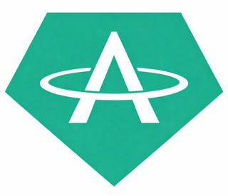

Digital value for the next layer of commerce.
AEDT brings an AED-oriented digital-asset experience to TRON with public verification, live market visibility, practical utility, and a clearer path from token identity to digital services.
Contract TV714TT9…nPJX6K · Never trust a ticker alone.

Clarity starts with what people can verify.
The website surfaces contract identity, public market references, network state, project data and official channels before promotional claims.
On-chain identity
Contract and explorer access stay visible across the project so users can verify the exact asset.
Token detailsLive market surface
Price, liquidity, volume and change are loaded from public DEX data with direct source links and safe fallbacks.
Market dashboardOpen project data
Contract, network, market references and ecosystem information are organised in one clear public view.
Explore transparencyUtility roadmap
AEDT can evolve beyond a token page into merchant, digital-service and business workflows through planned integrations.
Explore roadmapBuilt on a public network users already understand.
TRC-20 token architecture enables wallet visibility, public transaction history and familiar explorer-based verification.
Contract & public reference
Check the market outside this website.
Cross-check price and liquidity on public public services instead of relying on one project interface.
One project. Different jobs.
Dedicated paths keep product, merchant and market information useful for each audience.
Hold, move, verify.
Wallet compatibility, exact identity, market references, safe handling and practical transfer guidance.
For individualsSettlement-oriented utility.
Merchant and service workflows with merchant-ready workflows, transparent transaction references and simple integration paths.
For businessReview-ready project data.
Contract, pair, supply, liquidity sources and documentation in an exchange-facing structure.
For exchanges